Guia ràpida: vull publicar…
| Vull publicar… | Plantilla | Què canvie |
|---|---|---|
| Fotos d'un acte (carrusel) | carrusel-portada + carrusel-interior | foto, títol (2 línies), subtítol; una interior per foto |
| Un horari (entradeta, mig any…) | story-horaris | títol i files etiqueta/hora |
| Felicitar algú | post-persona / story-persona / post-anunci | foto, nom, motiu |
| Lamentar una mort | post-dol / story-dol | foto, nom, dates, frase |
| Renovació amb la banda, avisos | post-anunci-titol / story-anunci | titular i cos |
| Comunicat oficial | post-comunicat | data/assumpte; text complet al peu |
| Una sola foto | post-foto / story-foto | foto i titular |
| Un vídeo | video-titol, video-lower-third | títol, nom i càrrec |
Tres maneres de fer-ho
Copia un JSON de tools/examples/, canvia el text i executapython3 tools/render.py peça.json
Obri templates/<nom>.svg, edita el text (fonts Playfair Display i Lato), arrossega la foto i exporta a PNG.
Dona-li AGENTS.md i la petició («ha mort X, ací la foto»). Vegeu Agents d'IA.
Qui som
Els Moros i Cristians d'Alcoi
Cada abril, al voltant de Sant Jordi, Alcoi commemora la defensa de la ciutat davant del cabdill al-Azraq (1276) amb una festa única: entrades de cada filà, processons, ambaixades, el soroll de la pólvora i la música. La Trilogia Festera ocupa els dies 22, 23 i 24 d'abril. A octubre arriba el Mig Any, quan la filà tria els seus càrrecs i prepara l'any festiu.
Una filà és una comparsa que desfila amb vestimenta pròpia; cada filà pertany al bàndol moro o cristià. Càrrecs: primer tro, alferes, capità, sargent, dianer, glorier…
La Filà Magenta
- 1865
- Es funda en maig com a Beduïns (bàndol moro).
- 1876
- Primera alferecia mora; el poble ja li diu «Magenta».
- 1878
- Les actes de l'Associació de Sant Jordi recullen el nom Magenta, pel color dels bombatxos.
- 1926 / 1967
- Reformes del vestit; el 1967 es recupera l'esperit nòmada de 1865.
- 1965
- Centenari de la filà.
- 2008
- S'estrena el vestit femení.
- 2015
- 150 aniversari amb vestit commemoratiu.
Emblema: mitja lluna groga abraçant una estrella verda sobre fons magenta. Dades extretes de fonts comunitàries; validar amb l'arxiu de la filà i l'Associació de Sant Jordi abans de publicar-les com a oficials.
Personalitat i to
Clàssica
Vellut, cortinatges, passamaneria daurada i marcs orgànics. Tipografia amb rematades.
Actual
Composicions netes, filets fins daurats, etiquetes en majúscules amb tracking, comptadors «02 / 08», molt d'aire.
Càlida
Parlem en «nosaltres» i en valencià: «Des de la Filà Magenta donem l'enhorabona…».
| Cas | To | Evitar |
|---|---|---|
| Felicitació, nomenament | càlid, orgullós | col·loquialismes, emojis excessius |
| Dol | sobri, respectuós, breu | emojis, exclamacions, hashtags festius, colors vius |
| Informació (horaris, convocatòries) | clar, directe | text llarg, ambigüitat en dates/hores |
| Comunicat | solemne, simètric | humor |
L'escut
Escut (principal)
Escut circular (cantonades, avatars)
També sobre clar
- Fitxers:
assets/escut.svgiescut-circular.svg. - Zona de respecte ≥ ¼ de l'amplada de l'escut.
- Mida mínima: 90 px d'alçada en pantalla.
- Rectangular a dalt al centre (posts de text) o circular en una cantonada (sobre foto).
- Deformar-lo, girar-lo o recolorar-lo.
- Afegir ombres, llums o contorns.
- Posar-lo sobre zones de molt de detall.
- Fer-ne versions amb IA.
Els colors de l'escut (magenta brillant, groc i verd) són propis de l'emblema; no s'usen en text ni fons.
Color
Proporció
Fons fosc de vellut/magenta (~55-60%), text blanc roto (~25%), daurat per a titulars i filets (~10%), verd només com a ornament (~5%).
Contrast (WCAG)
| Combinació | Ús |
|---|---|
| Blanco Roto sobre vellut fosc | Text informatiu, cossos de text (≈ 16:1) |
| Daurat sobre vellut fosc | Titulars i dades destacades (≈ 6:1) |
| Magenta sobre blanc roto | Titulars en versió clara (≈ 9:1) |
| Daurat sobre magenta #7D1941 | Només titulars grans (≈ 3:1) — mai text petit |
| Gris Obscur sobre magenta | No usar |
Tipografia
Bold o Black per a titulars curts, Regular/Italic per a cites i lemes. En MAJÚSCULES amb tracking ample per a capçaleres institucionals.
Regular per a text; Bold/Black només per a dades crítiques: dissabte 24 d'abril a les 21:00 h.
| Rol | Font | Mida (story / post) | Notes |
|---|---|---|---|
| Titular | Playfair Bold | 100–150 px | ≥ 2–3× el cos. Blanc o daurat. 2-4 línies. |
| Subtítol / frase | Playfair Regular | 46–60 px | Noms propis en Bold. |
| Cos informatiu | Lato Regular | 38–44 px | Alt/baix, mai llargs en majúscules. |
| Dada destacada | Lato Bold | 34–40 px | Daurat; opcionalment en majúscules amb tracking. |
| Etiqueta tècnica | Lato Bold caps | 24–28 px | Tracking +0.3 em, daurat: «FILÀ MAGENTA · ALCOI». |
| Mínim absolut | — | 32 px en story | Menys no es llig en el mòbil. |
Alineació: centrada per a comunicats i protocol; a l'esquerra per a anuncis dinàmics i portades. Sobre fons fosc: titular daurat o blanc i text blanc roto; sobre fons clar: titular magenta o verd i text gris obscur.
Textures, formes i composició
El llenguatge visual és el del teatre i la vestimenta festera: vellut magenta, cortines drapejades, bordats daurats i verds. Les formes són orgàniques (cintes, onades, arcs); els elements «tecnològics» són discrets i geomètrics (filets, cantonades, píndoles, comptadors).
assets/fons/: story-vellut, story-cortines-marc, marc-45, cortina-45, cortina-diagonal (alfa, per a fotos).
Story: 250 px lliures a dalt i 340 a baix (UI de Meta). Post: marge 90 px. Res important als ornaments.
Escut → etiqueta → titular → cos → dada. Un sol focus per peça. Centre fosc i buit per a text.
Nous fons amb IA: prompts/fons.md.
Fotografia
- Retalla pels ulls/cara; usa el punt d'interès (
foto_focus). - Llum natural, color cálid; correcció suau.
- Vinyeta magenta fosca i degradat inferior per a text.
- Dol: blanc i negre, contrast suau.
- Fons de la foto net: festers amb vestimenta, actes, detalls.
- Filtres saturats o d'Instagram.
- Text llarg sobre la foto.
- Fotos borroses o de baixa resolució (< 1080 px).
- Publicar persones sense el seu consentiment (menors especialment).
Catàleg de plantilles
Totes a templates/ (SVG editable) i generables amb tools/render.py. Story = 1080×1920; post i carrusel = 1080×1350 (4:5).
Stories
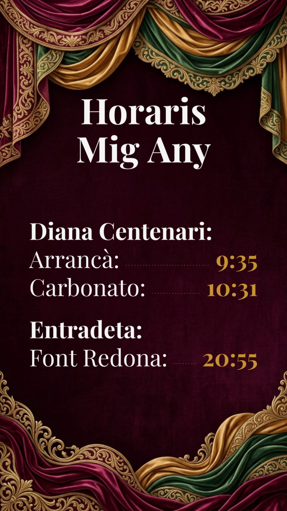
story-horaris
horarisDiana, entradeta, arrancà…titol · grups[]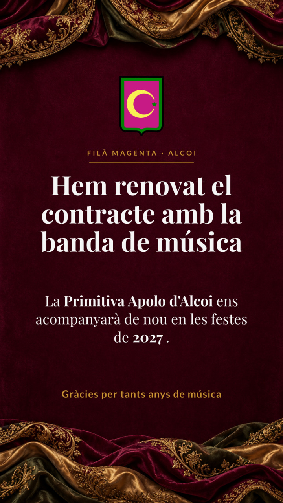
story-anunci
anunciRenovació de la banda, avisos.titol · text · dada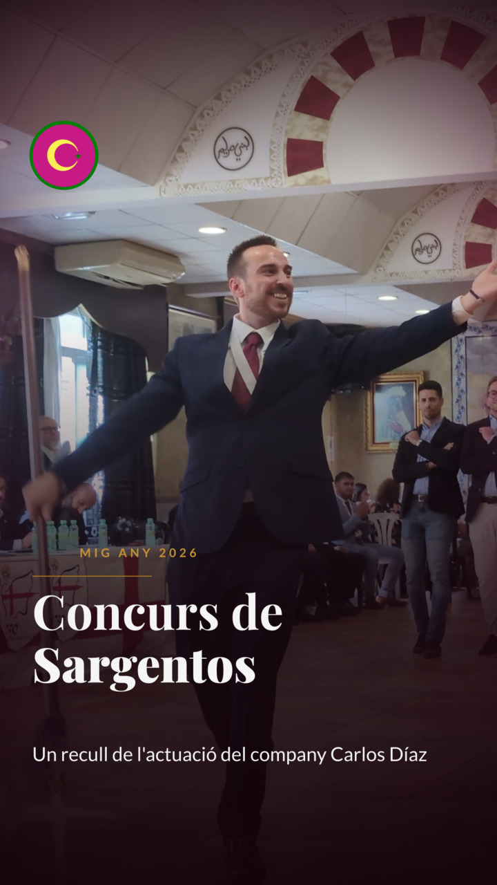
story-foto
fotoUna foto a sang amb titular.foto · titol · subtitol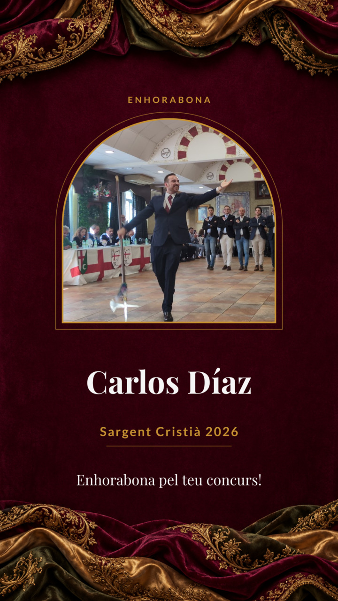
story-persona
felicitacióFoto en arc, nom i motiu.foto · nom · text · dates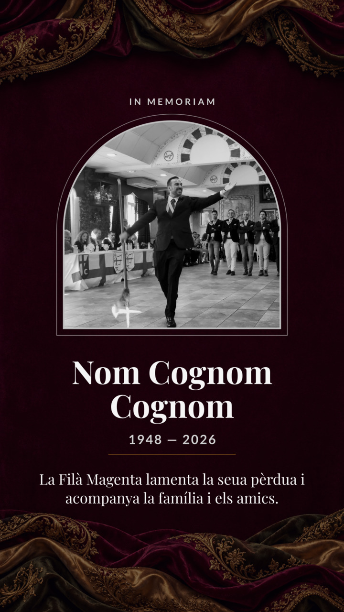
story-dol
dolFoto B/N, fons més fosc, to sobri.foto · nom · dates · textPublicacions
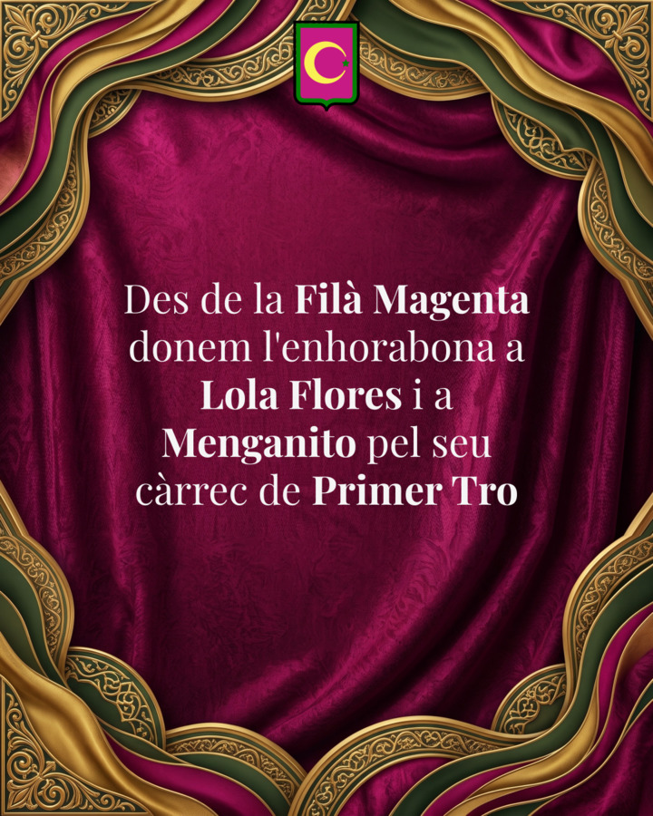
post-anunci
textFelicitacions i avisos en text.text · dada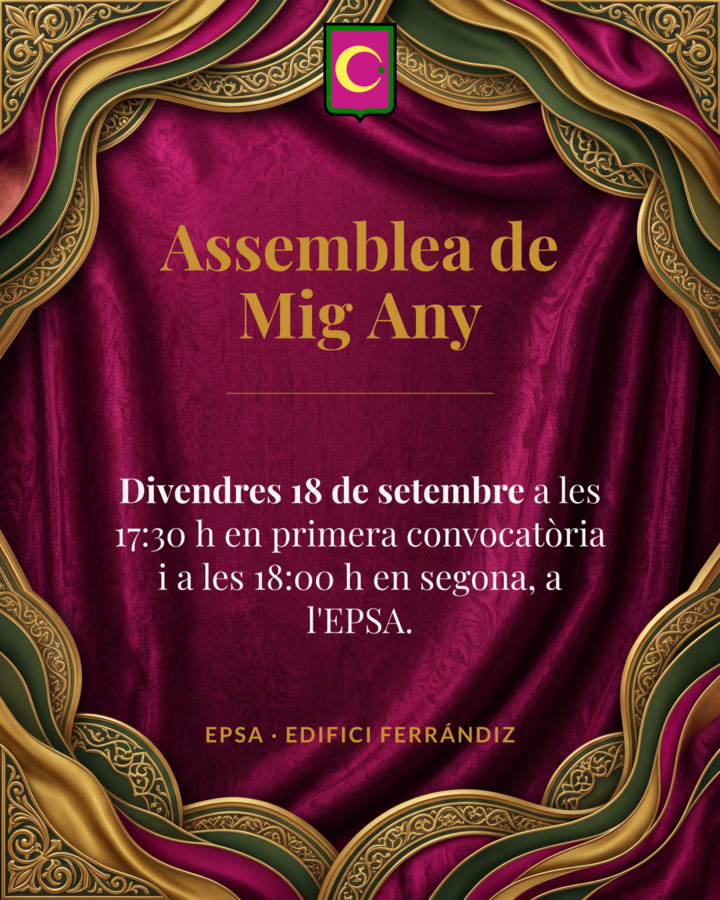
post-anunci-titol
textTitular + cos (assemblea, sopars).titol · text · dada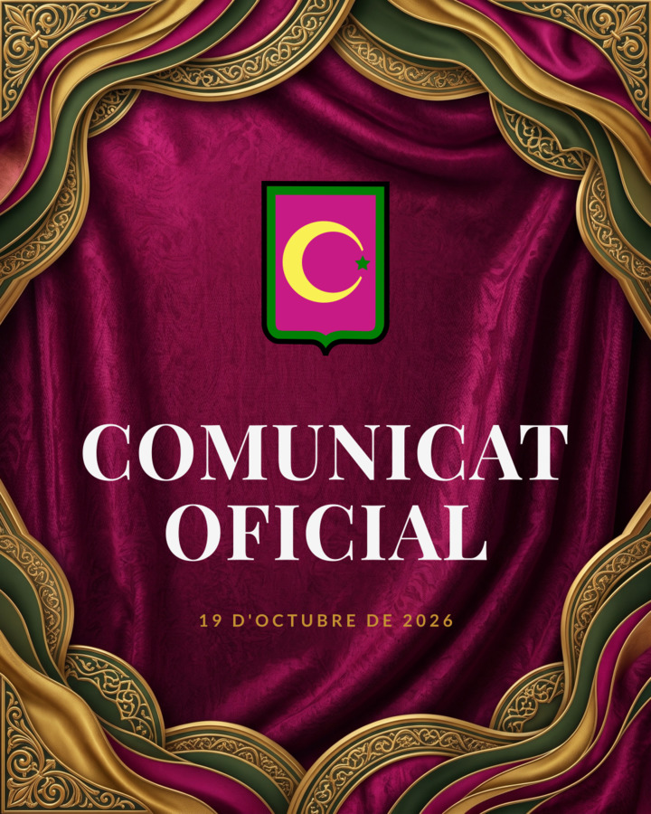
post-comunicat
oficialSimètric i solemne.subtitol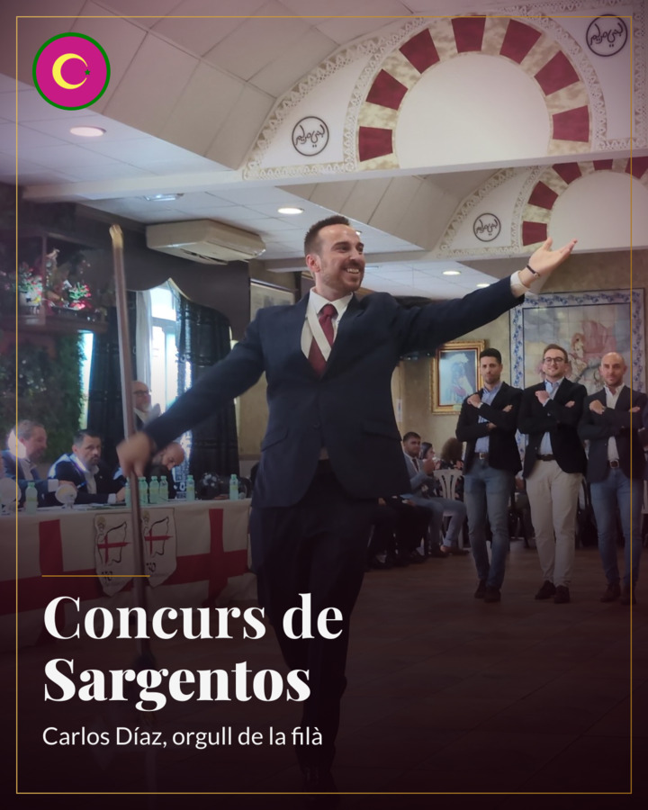
post-foto
fotoAnunci amb una única foto.foto · titol · subtitol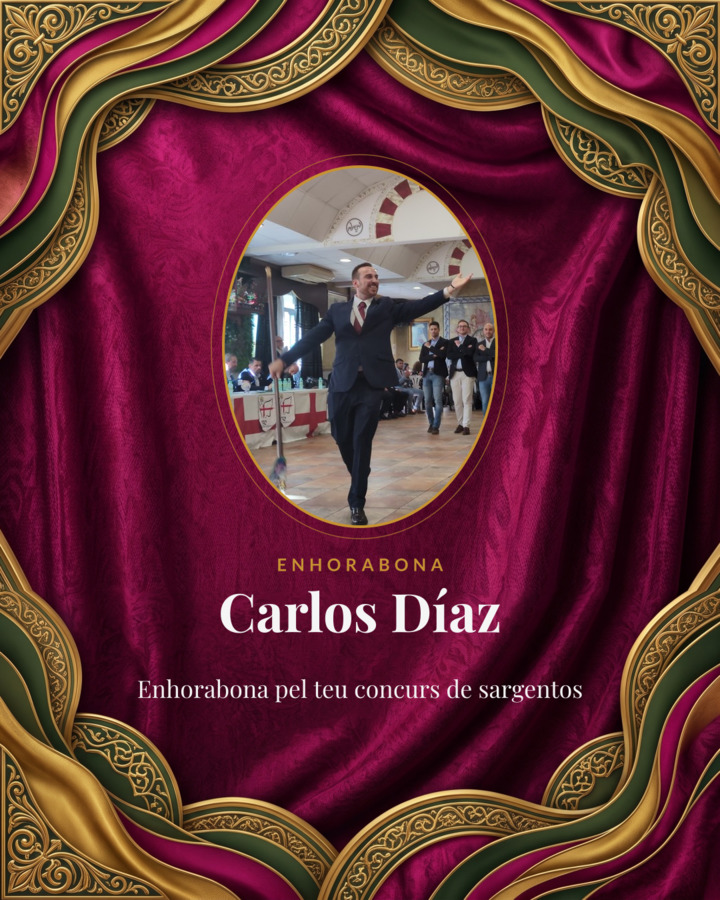
post-persona
felicitacióFoto ovalada.foto · nom · text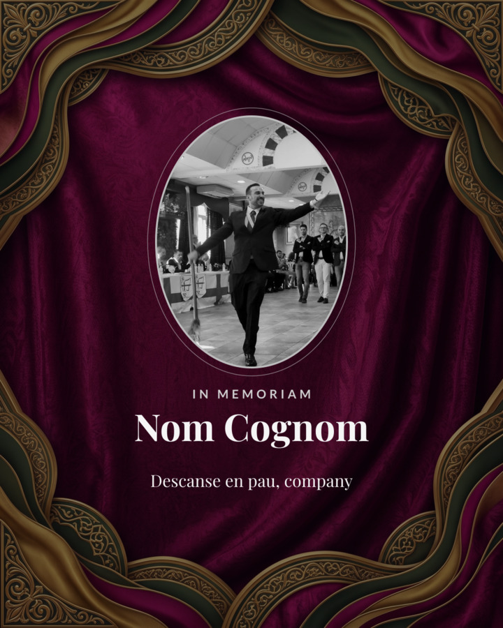
post-dol
dolCondol sobri.foto · nom · textCarrusel
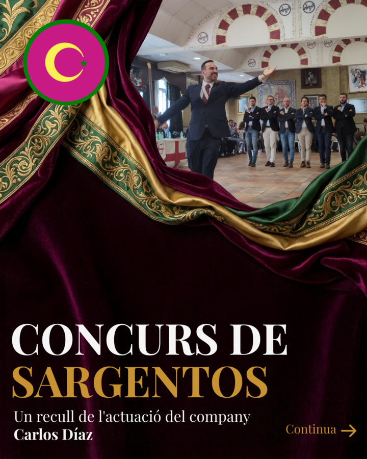
carrusel-portada
portadafoto · titol1 · titol2 · subtitol · continua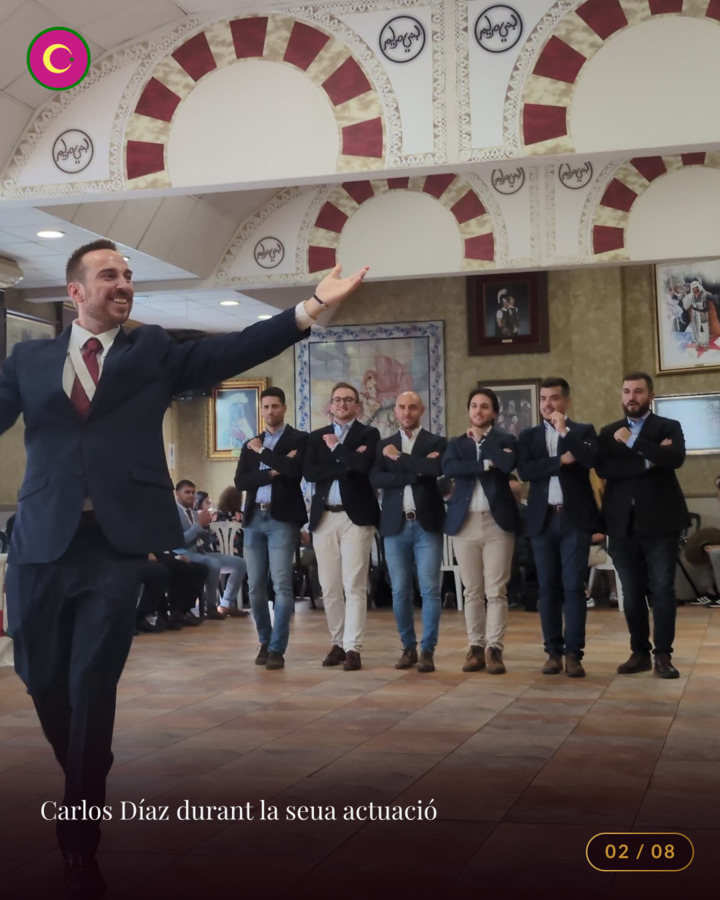
carrusel-interior
interiorfoto · peu · pagina- Portada (la millor foto).
- Fins a 8 interiors, cronològics, «02 / 10».
- Opcional: tancament amb
post-anunci-titol.
Vídeo d'activitats
- Format: vertical 1080×1920 (reels/stories), 30 fps, 9–45 s.
- Obertura (2–3 s):
video-titolamb escut, etiqueta i títol. - Identificació:
video-lower-third(1920×1080 horitzontal; versiona-la en vertical si cal). - Subtítols: Lato Bold, blanc roto, ombra suau, fins a 2 línies, sempre dins de la zona segura. Molta gent mira sense so.
- Tancament:
story-anunciamb data, lloc i escut. - Marca: escut circular en una cantonada (≥ 96 px). Música sense drets reservats o de la pròpia banda.
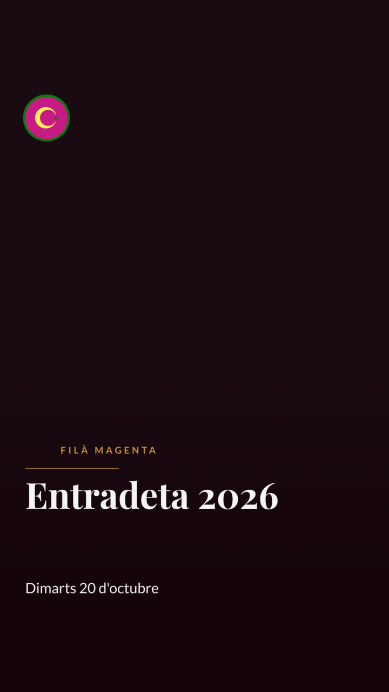
video-titol (alfa)Meta: formats i bones pràctiques
| Peça | Mida | Notes |
|---|---|---|
| Story / Reel | 1080×1920 (9:16) | Zona segura 250 px dalt, 340 px baix. |
| Publicació i carrusel | 1080×1350 (4:5) | Instagram només deixa pujar entre 4:5 i 1,91:1; més estret (com 3:4) s'autoretalla. La graella del perfil es veu en 3:4 i retalla ~34 px a cada costat: res important a menys de 60 px dels laterals. Màx. 10 imatges, totes amb la mateixa proporció. |
| Portada de Reel | 1080×1920 (9:16) | A la graella es veu retallada a 3:4: títol i escut dins la franja central (y 240–1680). |
| Avatar | escut circular | Es mostra com a cercle: usa escut-circular.svg. |
| Fitxer | PNG sRGB (o JPG ≤ 1 MB) | Nom: AAAAMMDD-descripció.png. Usa --scale 2 per a alta resolució. |
- El text íntegre va al peu de la publicació; la imatge porta només l'essencial.
- Text alternatiu: descriu l'escena i el text de la imatge.
- Hashtags (màx. 3-5):
#FilàMagenta#MorosiCristiansAlcoi. Cap en dol. - Revisa dates, noms i ortografia abans de publicar; no es pot editar una imatge ja publicada.
Per a agents d'IA
El fitxer AGENTS.md conté context, regles i receptes. Resum:
- Llig
AGENTS.mditemplates/INDEX.json(plantilles i camps). - Tria la plantilla amb la taula de decisió.
- Escriu un JSON i executa
python3 tools/render.py peça.json. - Passa la checklist (ortografia, dades, zones segures, escut, mida de lletra).
Exemples de peticions
«Ha mort Josep Pérez Mira, ací tens la foto (foto.jpg). Genera una story.»
→ story-dol { foto, nom: "Josep Pérez Mira", dates, text sobri }
«Ja tenim l'horari de l'entradeta de dimarts: Font Redona 20:55, Plaça 21:40. Genera una story.»
→ story-horaris { titol: "Horaris\nEntradeta", grups: [{files:[["Font Redona","20:55"],["Plaça","21:40"]]}] }
«Hem renovat el contracte amb la banda. Fes un post.»
→ post-anunci-titol { titol: "Renovem amb la banda", text: "…" }